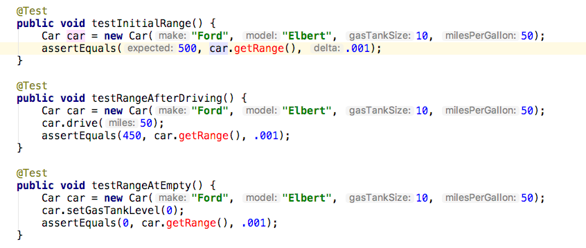
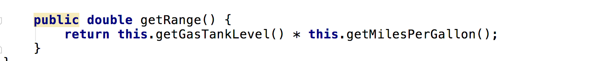
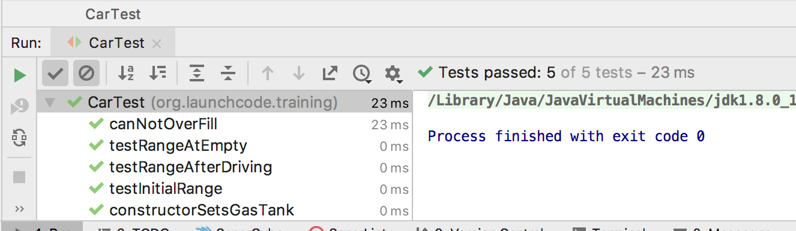
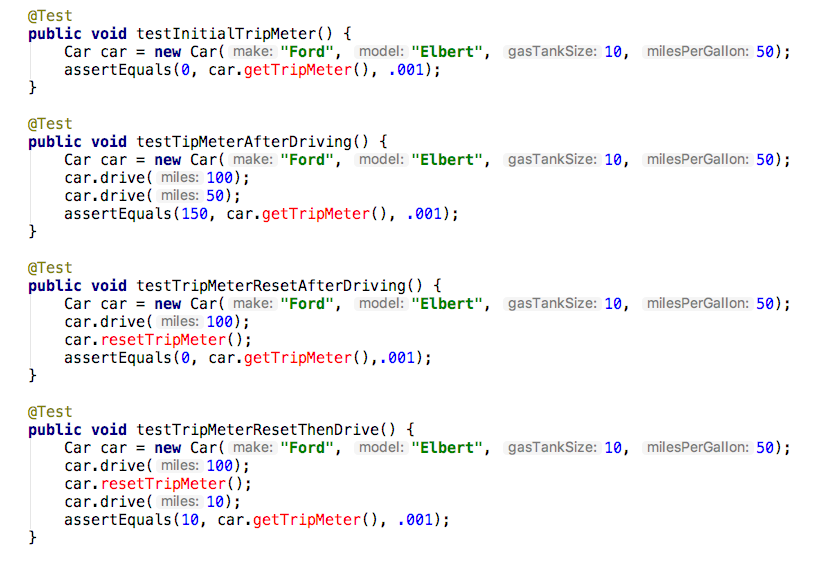
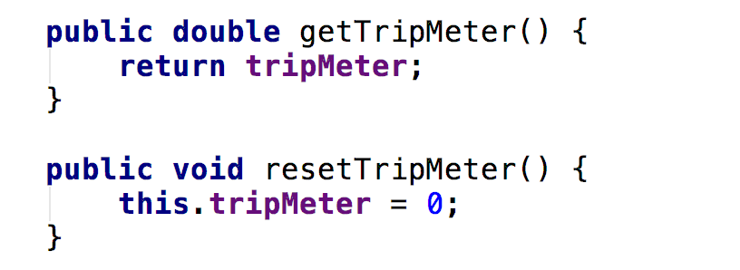
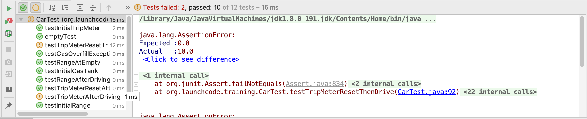
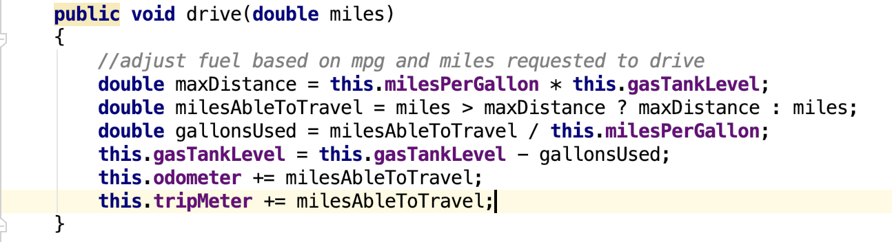
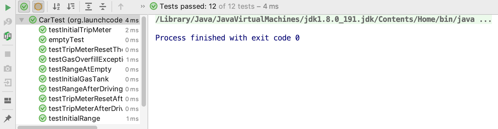
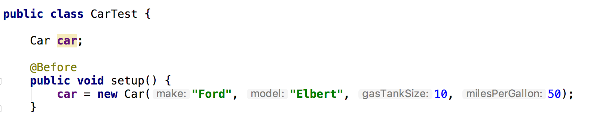
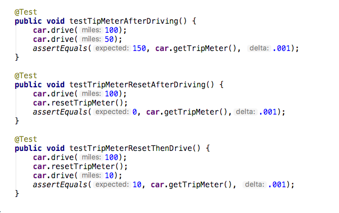

Follow Along
- Discuss the requirements we want to add
- Create a test list
- Write the tests
- Make them pass
- Clean up the code if there are any code smells
Discuss Requirements
Following TDD and the red-green-refactor workflow we need to understand our requirements before writing any code.
Today we will be implementing Range, and Trip Meter functionality.
The Range functionality will calculate how many more miles the car can drive before running out of gas. The output should be a Double reprsenting the miles the car can drive before needing to fuel up.
The Trip Meter will be a separate resetable odometer. This will allow a user to track the number of miles travelled on a specific trip.
Create a Test List - Range Feature
Based on the requirements we need to create three tests
- testInitialValue - create a car and check range
- testValueAfterDriving - drive a car and verify remaining range
- testValueAtEmpty - verify the range for a car with an empty tank
Write the Tests - Range Feature

What happens when you run the tests?
Well the tests won’t run yet, because our code won’t compile.
We are calling a few methods that don’t exist. We will need to create these methods to get them to run.
Make Them Pass - Range Feature
We need to add getRange() to Car.java.

After adding the below code, run the tests again. All tests should be passing at this point.

Create a Test List - Trip Meter Feature
Based on the requirements we need to create three tests
- testInitialValue - create a car and verify initial trip value is 0
- testAfterDriving - drive a car and verify trip value is driven amount
- testResetAfterDriving - drive a car, reset trip, then verify trip is 0
- testResetThenDrive - drive, reset the trip, drive again, verify trip value is driven amount
Write the Tests - Trip Meter Feature

What happens when you run the tests?
Well the tests won’t run yet, because our code won’t compile. We are calling a few methods that don’t exist. We will need to create these methods to get them to run.
Make Them Pass - Trip Meter Feature
We need to add a property tripMeter and two functions getTripMeter() and resetTripMeter() to Car.java


Run the tests again. You will find that the code is compilling, but not all tests are passing.

Our tests are currently failing every time our car drives. We need to add some code to our drive method so that it updates the TripMeter as well as the Odometer.

Now when we run our tests, they all pass!

Clean Up Code
Now that are tests pass, it’s a good idea to clean up our code. Our project is pretty small still, but there are a lot of redundancies in our CarTest.java file. We should clean them up.
We will use @Before, and @After to set some variables we can use in each of our tests, so we don’t have to declare a new object at the start of every test. This will cut down on our redundant code.

Using the @Before annotation allows us to run some code before every test method in this class. In this example we use the @Before annotation at the top of our Class, and we are setting up a car. We will then change our tests to test this car, instead of requiring each of our tests to create a new car object.

We can now change our test methods to change, and make assert statements reference the car created in the setup method. Look over your other tests, and see if they can benefit using the @Before annotation.
After refactoring your code, re-run your tests to make sure they all pass. If they don’t make the changes necessary so they will pass. Then it would be a great idea to push your work to your personal GitLab account.